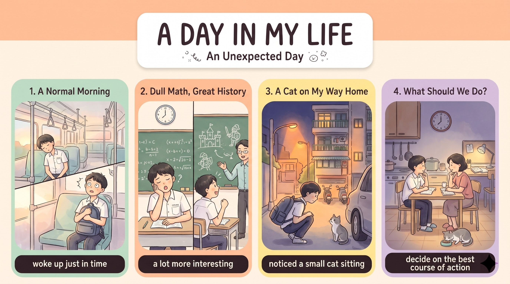

鬧鐘六點半響起，一切看似平常；公車上太溫暖，我睡著了，幸好及時睜眼跳下車。
opened my eyes just in time數學課一如往常沉悶，我一直看時鐘；歷史課卻很精彩，老師講了一位勇敢女王的故事。
as dull as always照常補習後，回家路上我注意到鄰居車底下有東西在動：是一隻小灰貓，我走近時牠沒跑，反而跟我到家門口。
noticed something moving我站在門口不知所措，餵了牠牛奶，問媽媽能不能養；媽媽說明天再決定，我已經開始想要叫牠什麼。
whether we could keep itMy alarm (S) + rang (V)；主幹二 the day (S) + seemed (V) + completely normal (C)。
My alarm rang at 6:30 a.m.,（主幹一）and the day seemed completely normal.（主幹二）語塊 1（鬧鐘在早上六點半響起）➔ 語塊 2（這一天看似再平常不過）
and 後面照順序翻：「這一天看似再平常不過」。
My alarm rang、右邊 the day seemed ... normal，兩邊都有主詞動詞，是對等子句。故事開頭用「聲音（鬧鐘）＋感受（看似平常）」，比直接寫 Today was a normal day 更有畫面。
seem／appear + adj.：看起來；ring–rang–rung。I (S) + grabbed (V1) + some toast (O) + and ran (V2) + to the bus stop。
grab（抓、匆匆拿）；toast（吐司，不可數，a piece of toast）；run–ran–run。
I grabbed some toast（主幹動詞一）and ran to the bus stop.（主幹動詞二）語塊 1（我隨手抓了片吐司）➔ 語塊 2（就跑去公車站）
兩個動作照順序翻。
ran 沒有主詞，共用 I。故事寫作用 grab、rush、run 這類「快」的動詞，不用寫 quickly，讀者就感受到時間很趕。
grab＝take quickly；toast 不可數：a slice／piece of toast。The warm bus (S) + made (V) + me (O) + so sleepy (C)；結果子句 I fell asleep；主幹二 I (S) + opened (V) + my eyes (O)。
make sb + adj.；so + adj. + that + 子句；sleepy（想睡的）vs. asleep（睡著的）；just in time to V。
The warm bus made me so sleepy（主幹一（無生命主詞））that I fell asleep,（that 結果子句）but I opened my eyes just in time（but 對比子句）to jump off at school.（不定詞）語塊 1（公車上太暖和，讓我昏昏欲睡）➔ 語塊 2（結果睡著了）➔ 語塊 3（但及時睜開眼睛）➔ 語塊 4（在學校那站跳下車）
that 子句接著翻結果：「結果睡著了」。
but 後面照順序：「但我及時睜開眼睛，在學校那站跳下車」。
so sleepy 程度到哪裡？往右看 that I fell asleep——程度大到產生結果。so 後面接形容詞，that 後面接結果。sleepy（想睡的）→ asleep（睡著了），故事裡兩個字剛好一前一後。
so + adj. + that + 子句＝such + a + adj. + N + that；sleepy／asleep／awake。Math class (S) + was (V) + as dull as always (C)；主幹二 I (S) + kept checking (V) + the clock (O)。
as + adj. + as always（一如往常地……）；keep + V-ing（一直）；check the clock。
Math class was as dull as always,（主幹一（同級比較））so I kept checking the clock.（so 結果子句）語塊 1（數學課一如往常地沉悶）➔ 語塊 2（所以我一直看時鐘）
照順序翻：「數學課一如往常地沉悶」。
as dull as always 是拿「今天」跟「平常」比，一樣無聊。as + 原級 + as；keep (on) + V-ing。History (S) + was (V) + exciting (C)。
however 是副詞，前後要用逗號；exciting（令人興奮的）vs. excited（人感到興奮）。
History, however, was exciting（主幹＋插入轉折）because our teacher told a story（because 原因子句）about a brave queen.（介系詞片語（修飾 story））語塊 1（歷史課卻很精彩）➔ 語塊 2（因為老師講了）➔ 語塊 3 戴帽（一位勇敢女王的）➔ 故事
S, however, V／S + V; however, S + V；exciting／excited。I (S) + spent (V) + a couple of hours (O) + at cram school。
spend + 時間 + (in) V-ing／at 地點；as usual；a couple of。
As usual,（方式副詞（句首））I spent a couple of hours at cram school（主幹）after class.（時間片語）語塊 1（跟平常一樣）➔ 語塊 3 提前（下課後）➔ 語塊 2（我在補習班待了幾個小時）
As usual 在句首，翻「跟平常一樣」。
spend 的主詞一定是「人」，受詞是「時間或錢」：I spent a couple of hours ...。如果主詞是事情，要改用 take：It took me a couple of hours.
S(人) + spend + 時間 + V-ing／It takes + 人 + 時間 + to V。I (S) + noticed (V) + something (O) + moving (OC)。
notice + O + V-ing；something 先賣關子；a neighbor's car（鄰居的車）。
On my way home,（時間片語）I noticed something moving（主幹＋分詞補語）under a neighbor's car.（地點片語）語塊 1（回家路上）➔ 我注意到 ➔ 語塊 3 提前（鄰居的車子底下）➔ 語塊 2（有東西在動）
On my way home 先翻「回家路上」。
something moving：notice 後面放受詞 something，再用 V-ing 交代它正在動。讀者不知道是什麼，就會想往下讀，這是記敘文的懸念技巧。
notice／see／hear + something + V-ing。It (S) + was (V) + a small gray cat (C)；主幹二 I (S) + was (V) + curious (C) + about where it came from。
where it came from 是 wh- 名詞子句，當介系詞 about 的受詞。
be curious about + N／wh- 子句；名詞子句不倒裝：where it came from（✗ where did it come from）。
It was a small gray cat,（主幹一）and I was curious about（主幹二）where it came from.（wh- 名詞子句（介系詞受詞））語塊 1（原來是一隻小灰貓）➔ 語塊 2（我很好奇）➔ 語塊 3（牠是從哪裡來的）
先翻揭曉：「原來是一隻小灰貓」。
about，介系詞後面要接名詞；往右看——it came from 主詞動詞齊全。介系詞後面接一整個問題 ➔ wh- 名詞子句。注意要拉直：where it came from ✓，不是 where did it come from。be curious about + wh- 子句；think about what to do。it (S) + didn't run away (V)；主幹二 it (S) + followed (V) + me (O) + to my door。
When I walked closer,（When 時間子句）it didn't run away;（主幹一）instead, it followed me to my door.（instead 轉折＋主幹二）語塊 1（我走近時）➔ 語塊 2（牠沒有跑走）➔ 語塊 3（反而一路跟我到家門口）
When 子句在句首，直接翻「我走近時」。
instead 單獨用；後面要接名詞或 V-ing 才用 instead of。
S + V; instead, S + V；instead of + V-ing。I (S) + had (V) + no idea (O) + what to do。
have no idea + wh-（完全不知道）；分詞構句主詞需與主句相同。
Standing there,（分詞構句（狀態））I had no idea（主幹）what to do.（wh- + to V）語塊 1（我站在那裡）➔ 語塊 2（完全不知道）➔ 語塊 3（該怎麼辦）
As I stood there。主詞要跟主句一樣（I），寫成 Standing there, the cat looked at me 就變成「貓站在那裡」了。have no idea + wh-＝not know at all；分詞構句還原 As／While S + V。I (S) + gave (V1) + it (IO) + some milk (DO) + and asked (V2) + my mom (O) + whether 子句 (O)。
ask sb whether／if + S + V（問某人是否）；could 跟著主句過去式。
I gave it some milk（主幹動詞一）and asked my mom（主幹動詞二）whether we could keep it.（whether 名詞子句）語塊 1（我餵了牠一些牛奶）➔ 語塊 2（並問媽媽）➔ 語塊 3（我們能不能養牠）
兩個動作照順序：「我餵了牠一些牛奶，並問媽媽」。
asked my mom 要一個問題當受詞；往右看——we could keep it 是完整句，問的是「能不能」（yes／no 問題），沒有 what、where 可用，就用 whether 或 if。ask sb whether／if + S + V；whether 可接 or not，if 不行放句首。She (S) + said (V) + (that) 子句 (O)。
say (that) S + would + V（轉述未來）；decide on；course of action。
She said（主幹）we would decide on the best course of action（名詞子句（省略 that））tomorrow.（時間副詞）語塊 1（媽媽說）➔ 語塊 3 提前（明天再）➔ 語塊 2（決定最好的做法）
She said 翻「媽媽說」，把 she 換成明確的人。
said，往右看 we would decide ... 是完整句，中間省略 that，是名詞子句。媽媽原話是 "We will decide ..."，轉述時因為 said 是過去式，will 跟著變 would。
will ➔ would；decide on N。I (S) + 'm finishing (V) + my homework (O)；主幹二 I (S) + 'm already wondering (V) + what I'll name the cat (O)。
wonder + wh- 子句（想知道、在想）；name + O + 名字（為……取名）。
Now I'm finishing my homework,（主幹一）and I'm already wondering（主幹二）what I'll name the cat.（wh- 名詞子句）語塊 1（現在我正在把作業寫完）➔ 語塊 2（已經在想）➔ 語塊 3（要幫牠取什麼名字）
時間回到現在，照順序翻：「現在我正在把作業寫完」。
wondering，在想「一個問題」；往右看——I'll name the cat ___，缺的正是名字，what 就填在那個位置。這是 wh- 名詞子句，用直述語序 what I'll name，不是 what will I name。wonder + wh- 子句；name + O + N：They named the cat Lucky.1. 請選出最適合填入 (1) 的字：
so dull that I fell asleep：電影太沉悶，結果睡著。2. 請選出最適合填入 (2) 的字：
just in time to V：及時趕上。3. 請選出最適合填入 (3) 的字：
notice + O + V-ing。4. 請選出最適合填入 (4) 的字：
where it came from。5. 請選出最適合填入 (5) 的字：
ask sb whether + S + V。6. The baby was ________ in his mother's arms, so we talked quietly.
7. Kids are often ________ about how things work, so they ask a lot of questions.
be curious about。8. He felt sick, but the doctor said his body temperature was ________.
normal。9. I ________ a couple of hours cleaning my room last Sunday.
S(人) + spend + 時間 + V-ing。10. 下列哪一句文法正確？
11. 「我問媽媽我們能不能養牠。」最佳英譯是：
ask sb whether + S + V，不倒裝，時態一致 could。12. 下列哪一句文法正確？
as + 原級 + as。13. Why did the writer fall asleep on the bus?
14. What did the writer notice on the way home?
15. How does the writer probably feel at the end of the story?